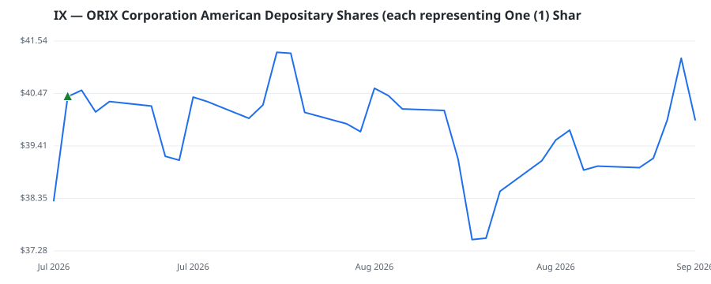

bullish · bearish · n/a — dots: price>SMA10 · SMA10>SMA50 · SMA50>SMA200 · up>down volume (20d)
Other · large cap
Members who bought IX earned a dollar-weighted -1.2% from their disclosure dates, versus +2.9% for the S&P 500 over the same holding windows (-4.1% alpha).

▲ green = a disclosed purchase · ▼ red = a disclosed sale (plotted on disclosure date)
ORIX Corp is a diversified financial services company with operations in Corporate Financial Services, Maintenance Leasing, Real Estate, PE Investment and Concession, Environment and Energy, Insurance, Banking and Credit, Aircraft and Ships, ORIX USA, ORIX Europe, Asia, and Australia and engages in various other fee businesses by providing products and services aligned with customer needs to its core customer base of domestic small and medium-sized enterprises. Orix's numerous divisions finance leases of large-ticket items like ships, airplanes, and technology equipment. The company generates · website
| Member | Chamber | Out-performer | Disclosed buys $ | Return on buys |
|---|---|---|---|---|
| Alan Armstrong | senate | — | $8K | -1.2% |
Disclosed $ figures are bracket midpoints — filings report ranges (e.g. $1,001–$15,000), not exact amounts.